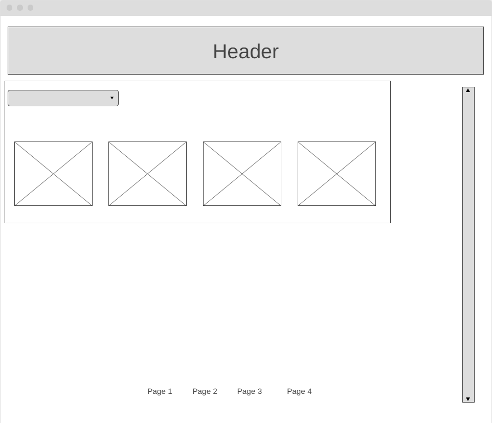
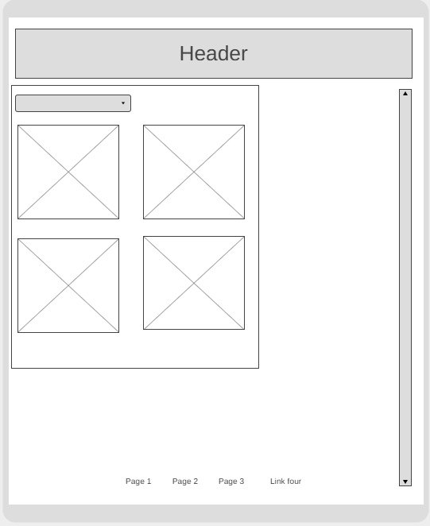
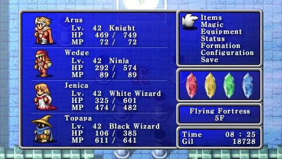

This wireframe was made before i had any prior knowledge of wireframing.
Additionally, I wasn't sure of the direction to take my website in. The
focus for this wireframe is the home page. I was focused on plainly
presenting the most important information, that being the header and
navigation to the other pages. Due to being the first wireframe, styling
was not considered. I also neglected to consider other layouts besides
desktop. Overall while this is a good starting point, more work needs to
be done to solidify the vision for this site.
Wireframe 1:


These wireframes are simply cleaned up versions of the previous using a
wireframe site to improve its visual quality. As far as differences go,
I added another layout for mobile devices. I added a scroll bar on the
side for improved navigation. At this point I had an idea on the theme
for my website being styled after video games and their menus. For this
reason I added drop-down that opens the main navigation menu. Generally,
I still adhered to the idea of keeping navigation simple.
This is an early concept of what a navigation menu could look like. The
main inspiration is a video game menu, specifically an rpg menu. Without
fonts an colours it can be harder to convey but the plan is sharp
shapes, (mostly rectangles) a dark blue colour scheme and an appropriate
font. Potentially also icons that match the theme.

The main inspiration for this design is one of FInal Fantasy's menus.
The idea for the potential colour and font is also inspired by these
types of menus. I like the colurs and block-like construction of the
menu, although I dislike how cluttered it can look. Sometimes the
information hierarchy can be confusing aswell. For my site, I will most
likely be using similar colours and shapes, but different
For the first practice for style guides, we were split into teams to
design a style guide for a specific kind of website. The prescribed site
was a South African skincare website with a focus on natural indigenous
ingredients.
DESIGN GOAL:
Our website will showcase a minimalistic, clean aesthetic that
prioritizes a user-friendly and engaging experience, that is easily
navigatable. The website will display the products, through reflecting
the richness of South Africa’s landscape.
DEFINING VISUAL AESTHETIC:
Our website will exhibit a minimalistic aesthetic, showcasing Blossom
Beauty’s products, in a manner that is appeasing and easy to the eye.
The focus of the website is to emphasize the organic ingredients of the
products, which will attract our target audience. Our minimalistic
colour palate will create an emphasis on the products to encapsulate
their natural origin. These colours will be seen throughout the page, to
create consistency, which will not overwhelm the user with change of
colour aesthetic.
COLOUR SCHEME:
The website contains a neutral background which will emphasise the text
and products, as there will be a contrast between the light background
and dark text. With the use of different colours for boarders and
headings, leads the viewers eyes through the website, without
distracting them.